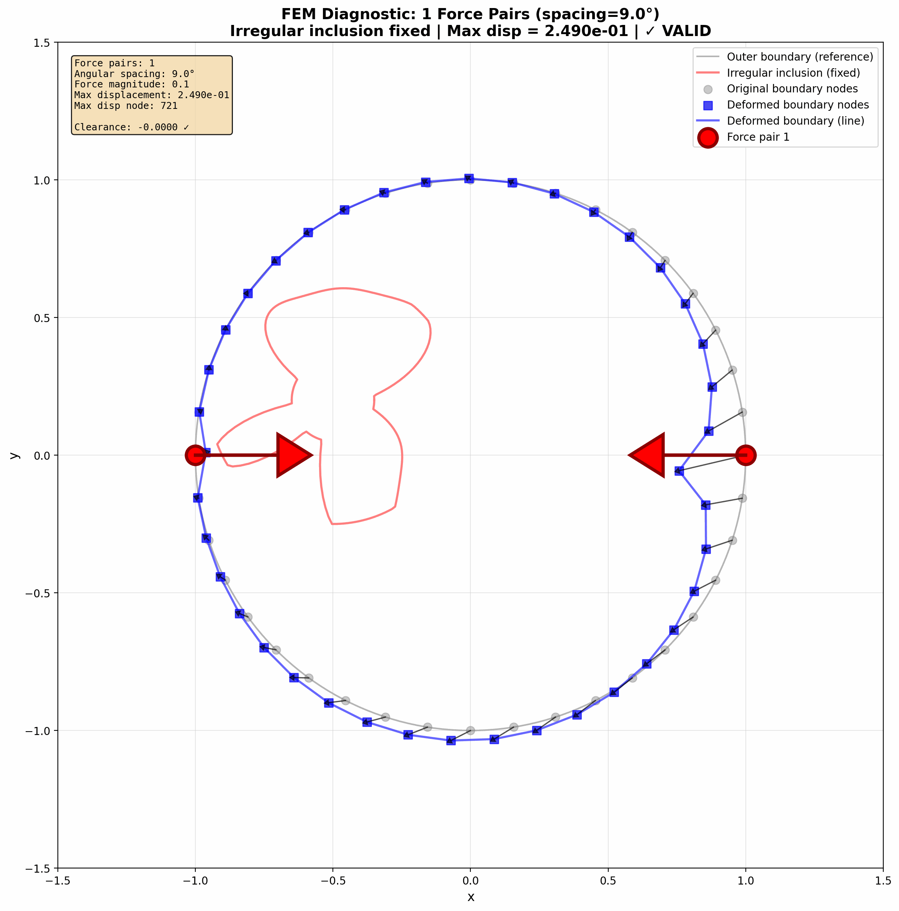
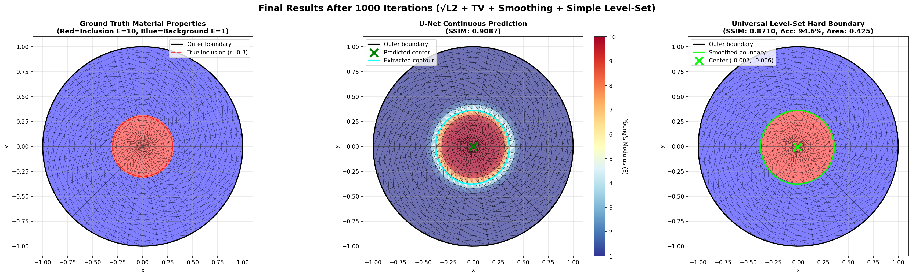
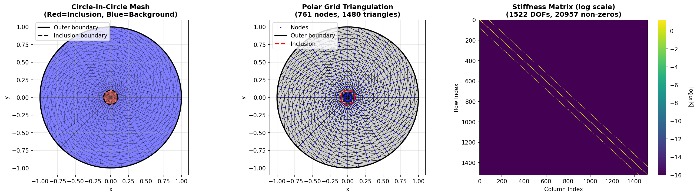
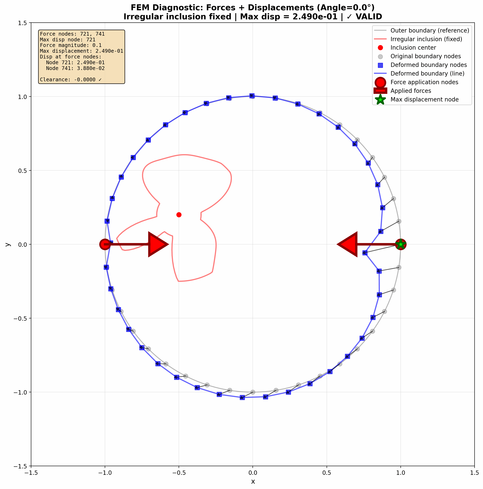
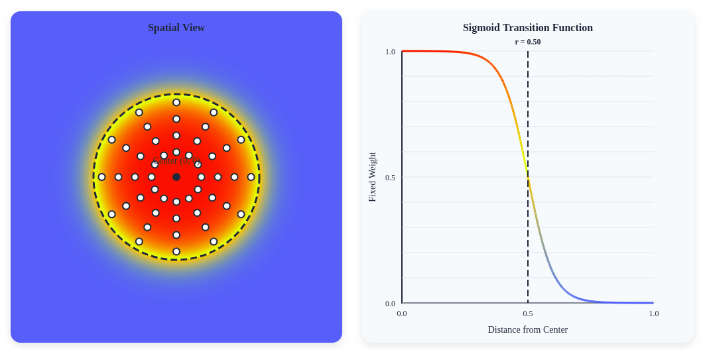
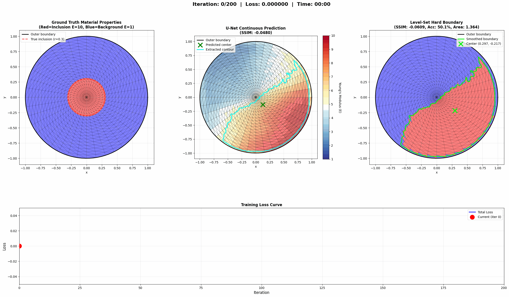

Part I: Foundations
The intuition, concepts, and architecture behind PAT Scan
1. The Doctor's Hands
Close your eyes and imagine a doctor examining a patient. They press gently on the abdomen, feeling for something that shouldn't be there. This is palpation—one of the oldest diagnostic techniques in medicine, practiced for over 3,000 years.
What are they feeling for? Stiffness. A tumor is like a hidden pebble in a bowl of jelly—when you press on the surface, the stiff spot reveals itself through how the surrounding tissue deforms.
The Jello Analogy
Imagine a bowl of Jello with a marble hidden inside. When you poke the surface, the Jello near the marble doesn't jiggle the same way as the rest. An experienced chef (or doctor) can feel where the marble is just by how the surface responds to touch. That's exactly what our AI learns to do.
But here's the challenge: what if you could only feel the edges of the bowl, not poke anywhere you want? What if you had to figure out where the marble is using only boundary measurements? That's the puzzle we're solving.
2. Learning from CT Scans
In 1971, Godfrey Hounsfield did something remarkable. He took X-ray images from many different angles around a patient and used mathematics to reconstruct what was inside. This became the CT scan, and it won him a Nobel Prize.
"What if we could do for touch what CT did for X-rays?"
We borrowed this insight. Instead of taking one measurement, we press on the tissue from many different angles, like a CT scanner rotating around a patient. Each press gives us a piece of the puzzle. Combine them all, and suddenly the hidden structure becomes visible.

3. The AI That Checks Its Work
Here's where the AI magic comes in. We train a neural network—think of it as a very eager student—to guess what the stiffness map looks like inside the tissue.
But here's the clever part: we don't just accept the guess. We check it.
Step 1: The Student Guesses
The AI looks at how the surface deformed and guesses: "I think there's a stiff blob right here."
Step 2: Physics Checks the Homework
We use physics simulation to ask: "If that guess were true, how would the surface actually deform?"
Step 3: Compare & Learn
If the simulated deformation doesn't match reality, the AI learns from its mistake and tries again.
Step 4: Repeat Until Perfect
After thousands of iterations, the AI becomes remarkably good at guessing correctly.
The Math Test Analogy
Imagine a student learning to solve word problems. They don't just memorize answers—they guess a solution, plug it back into the original problem to check if it works, and adjust if it doesn't. Our AI does exactly this, using physics as its "answer key." It's learning physics by doing physics.
Why Should You Care?
- MRI-based elastography: $1-3 million machines
- Ultrasound elastography: $50,000-200,000 systems
- PAT Scan vision: Potentially just sensors on a flexible band
💡 The Big Idea
We're teaching AI the ancient skill of palpation—the doctor's intuition encoded into algorithms. By combining the wisdom of physics with the pattern-recognition power of neural networks, we can make the invisible visible using nothing but touch.
4. Forward vs. Inverse Problems
Now let's get more precise. At the heart of PAT Scan lies a fundamental distinction in physics: the difference between forward problems (easy) and inverse problems (hard).
✅ Forward Problem
Given: Material properties + Applied forces
Find: Resulting deformation
"If I know what the tissue is made of and how hard I push, what shape does it become?"
❌ Inverse Problem
Given: Observed deformation + Applied forces
Find: Material properties
"Given how the tissue deformed when I pushed, what must it be made of?"
The forward problem has a unique, stable solution. The inverse problem is ill-posed: multiple material distributions could produce similar boundary measurements.
🎯 The Core Insight
This is precisely what we described in the "student checking homework" analogy! Instead of trying to directly solve the ill-posed inverse problem, we train a neural network to propose material distributions, then use the well-posed forward problem to check if the proposal matches observations.
5. The FEM Equation
To simulate how tissue deforms (the "physics checking homework" step), we discretize the continuous material into a mesh of triangular elements.
- F — Applied forces at each node (what we control)
- K — Global stiffness matrix (encodes ALL material properties)
- U — Resulting displacements (what we measure at boundaries)
🧱 What's in the Stiffness Matrix K?
K is assembled from individual element stiffness matrices. It's like a giant spring network— K tells you how much each node "resists" when you push on any other node. Change the materials → change K → change how forces produce displacements.
Given K and F, finding U requires solving K · U = F. We use
torch.linalg.solve—this is computationally tractable and well-posed.
6. Training Architecture
Here's the technical version of our "student checking homework" concept: a forward-model-in-the-loop training setup.
- U-Net Predicts: Given boundary displacements, output 64×64 material field E(x,y)
- Sample at Mesh: Get discrete material values at element centroids
- Build K: Assemble global stiffness matrix from predictions
- FEM Forward: Solve F = KU for predicted displacements
- Extract Boundary: Pull out boundary node displacements
- Compare & Learn: Backpropagate through entire pipeline
💡 Why This Works
The network learns physics, not just patterns. Every gradient update incorporates information about how material changes affect deformation.
7. Loss Functions & Regularization
Data Loss: MSE between predicted and measured boundary displacements.
TV Regularization: Penalizes unnecessary variation, encouraging piecewise-constant solutions with sharp boundaries—exactly what we expect for tissue with distinct inclusions.

⚖️ The Regularization Trade-off
Too little TV: Noisy predictions, overfitting
Too much TV: Over-smoothed, loss of details
Sweet spot: λ_TV ≈ 0.001-0.01
Part II: Implementation
The actual code that makes it all work
8. Create Sample
Everything begins with a mesh. Our domain is a circular tissue sample with radius R_outer = 1.0,
containing a centered circular inclusion with radius R_inner = 0.1. The inclusion represents
a stiffer region—perhaps a tumor—that we want to detect from boundary measurements alone.
We use a structured polar grid because it naturally conforms to our circular geometry. The polar coordinates
(r, θ) are converted to Cartesian (x, y), then triangulated into finite elements.
# Domain parameters R_outer = 1.0 # Outer circle radius R_inner = 0.1 # Inclusion radius E_b = 1.0 # Background Young's modulus E_i = 1.2 # Inclusion Young's modulus (20% stiffer) nu = 0.3 # Poisson's ratio n_radial = 20 # Radial divisions n_angular = 40 # Angular divisions # Create polar grid r = torch.linspace(0, R_outer, n_radial) theta = torch.linspace(0, 2*torch.pi, n_angular+1)[:-1] # Convert to Cartesian R, Theta = torch.meshgrid(r, theta, indexing='ij') X = R * torch.cos(Theta) Y = R * torch.sin(Theta)
The key insight here is the structured indexing scheme. Node 0 sits at the center, and subsequent nodes spiral outward in concentric rings. This makes it easy to identify boundary nodes (the outermost ring) and apply forces systematically.
def node_idx(i, j): """Get node index for radial index i, angular index j""" if i == 0: return 0 # Center point else: return 1 + (i - 1) * n_angular + (j % n_angular)
With our grid established, we create triangular elements. Around the center, triangles fan out like
pizza slices. Further from the center, each quadrilateral cell is split into two triangles.
Finally, we assign material properties: elements whose centroids fall within R_inner
get the stiffer E_i, while the rest get E_b.

The rightmost subplot shows the assembled global stiffness matrix K—notice its sparse, banded structure. This sparsity arises because each node only connects to its immediate neighbors, which is what makes FEM computationally tractable.
9. Stiffness Matrix Assembly
The stiffness matrix K is the heart of our physics simulation. It encodes how every node in the mesh resists deformation based on the underlying material properties. Assembly happens in two stages: first we compute element-level stiffness matrices, then we scatter them into the global matrix.
9a. Element Stiffness Matrix
For each triangular element with nodes at coordinates (x₁, y₁), (x₂, y₂), (x₃, y₃),
we compute a 6×6 stiffness matrix (2 DOFs per node × 3 nodes). The computation involves three ingredients:
the element area A, the strain-displacement matrix B, and the
constitutive matrix D.
def element_stiffness(coords, E, nu, thickness=1.0): """ Compute 6×6 element stiffness matrix for plane stress. K_e = t × A × B^T × D × B """ x1, y1 = coords[0] x2, y2 = coords[1] x3, y3 = coords[2] # Element area via cross product A = 0.5 * torch.abs((x2 - x1)*(y3 - y1) - (x3 - x1)*(y2 - y1)) # B matrix coefficients (strain-displacement) b1, b2, b3 = y2 - y3, y3 - y1, y1 - y2 c1, c2, c3 = x3 - x2, x1 - x3, x2 - x1 B = (1.0 / (2.0 * A)) * torch.tensor([ [b1, 0, b2, 0, b3, 0], [ 0, c1, 0, c2, 0, c3], [c1, b1, c2, b2, c3, b3] ]) # D matrix (plane stress constitutive) D = (E / (1 - nu**2)) * torch.tensor([ [1, nu, 0], [nu, 1, 0], [0, 0, (1 - nu)/2] ]) K_e = thickness * A * B.T @ D @ B return K_e
The B matrix relates nodal displacements to strains—it captures the element geometry.
The D matrix relates strains to stresses—it captures the material behavior. Together,
K_e = t × A × B^T × D × B tells us how this particular triangle resists deformation.
9b. Global Stiffness Matrix
Now we assemble all element matrices into one global system. Each element contributes to the global matrix at locations determined by its node indices. This "scatter" operation is the core of FEM assembly.
def assemble_stiffness(points, elements, element_materials, nu): """ Assemble global stiffness matrix from element contributions. K_global[dof_i, dof_j] += K_element[local_i, local_j] """ n_nodes = len(points) n_dof = 2 * n_nodes K = torch.zeros((n_dof, n_dof), dtype=torch.float64) for e, elem in enumerate(elements): # Get element coordinates and material coords = points[elem] E = element_materials[e] # Compute 6×6 element stiffness K_e = element_stiffness(coords, E, nu) # Global DOF indices for this element dofs = [] for node in elem: dofs.extend([2*node, 2*node + 1]) # Scatter into global matrix for i, di in enumerate(dofs): for j, dj in enumerate(dofs): K[di, dj] += K_e[i, j] return K
The resulting matrix K is symmetric, positive semi-definite, and sparse. Its size is
(2×n_nodes) × (2×n_nodes) because each node has 2 degrees of freedom (x and y displacement).
The sparsity pattern—visible in the rightmost subplot of our mesh figure—reflects the mesh connectivity:
non-zero entries appear only where nodes share an element.
🔑 Key Property
The stiffness matrix K depends on material properties E. This means when our U-Net predicts a material field, we can build a new K matrix and simulate what displacements that prediction would produce. This is the physics "checking homework."
10. Data Collection
With our mesh and stiffness matrix ready, we generate training data by applying forces and measuring the resulting boundary displacements. We use two complementary scanning strategies, both inspired by medical imaging: angular scanning and symmetric scanning.
10a. Angular Scanning (Multiple Force Pairs)
Angular scanning progressively increases the number of opposing force pairs applied to the boundary. Like a CT scanner taking more X-ray projections, more force pairs provide richer information about the internal structure.
def apply_multiple_force_pairs(points, boundary_nodes, n_pairs, force_magnitude, angular_spacing, device): """ Apply n_pairs of opposing force pairs around the boundary. Each pair compresses the sample along one axis. """ n_dof = 2 * len(points) F = torch.zeros(n_dof, dtype=torch.float64, device=device) for i in range(n_pairs): angle = i * angular_spacing # Find boundary nodes at angle and angle + π node_pos = find_boundary_node_at_angle(points, boundary_nodes, angle) node_neg = find_boundary_node_at_angle(points, boundary_nodes, angle + np.pi) # Apply radially inward forces dir_pos = -normalize(points[node_pos]) # Inward dir_neg = -normalize(points[node_neg]) # Inward F[2*node_pos:2*node_pos+2] = force_magnitude * dir_pos F[2*node_neg:2*node_neg+2] = force_magnitude * dir_neg return F
The animation below shows angular scanning in action. Watch how the deformation pattern changes as we add more force pairs—the stiff inclusion reveals itself through asymmetric displacement patterns.
10b. Symmetric Scanning (Single Force Pair, Rotated)
Symmetric scanning takes a different approach: we apply just one force pair and rotate it around the boundary. This generates data where all samples are rotationally related—teaching the network that the physics is the same regardless of orientation.
# Symmetric scanning parameters angular_spacing = 9.0 # Rotation increment in degrees n_rotations = 20 # Total rotations (covers 180°) for iter_idx in range(n_rotations): rotation_angle = iter_idx * angular_spacing # Apply SINGLE force pair at this angle F, node1, node2 = apply_single_force_pair( points, boundary_nodes, force_magnitude, rotation_angle, device ) # Solve for displacements U, U_nodes = solve_fem(K, F, fixed_dofs, free_dofs, n_dof, device) # Store boundary displacements for training boundary_displacements_list.append(U_nodes[boundary_nodes].cpu())

10c. Hard Boundary Conditions
During data generation, we enforce hard boundary conditions: all nodes inside the inclusion have zero displacement (rigid inclusion assumption). This is mathematically clean and produces the "ground truth" data we train against.
def setup_boundary_conditions(radii, R_inner, n_dof, device): """ Identify fixed vs free DOFs based on inclusion boundary. """ fixed_dof_list = [] free_dof_list = [] for i, r in enumerate(radii): if r <= R_inner + 1e-6: # Inside inclusion fixed_dof_list.extend([2*i, 2*i + 1]) else: free_dof_list.extend([2*i, 2*i + 1]) return torch.tensor(fixed_dof_list), torch.tensor(free_dof_list)
⚠️ Important Distinction
Hard BCs are used only for data generation. During training and inference, we use soft boundary conditions because we don't know the inclusion location ahead of time— that's what we're trying to find! This distinction is crucial for avoiding "inverse crime."
11. Building the Material Mask
The U-Net outputs a 64×64 "material mask" representing predicted stiffness values. To use this prediction in our FEM forward model, we need a series of processing steps: sampling at mesh nodes, thresholding to create binary decisions, smoothing for spatial coherence, and finally converting to element-wise material assignments.
11a. U-Net Architecture
Our U-Net takes boundary displacements (2 channels: Ux, Uy) interpolated onto a 64×64 grid and outputs a single-channel material field. The encoder-decoder structure with skip connections allows it to capture both global context and fine details.
class UNet(nn.Module): def __init__(self, in_channels=2, out_channels=1, base_features=32): super().__init__() # Encoder (contracting path) self.enc1 = double_conv(in_channels, base_features) # 64→64 self.pool1 = nn.MaxPool2d(2) self.enc2 = double_conv(base_features, base_features*2) # 32→32 self.pool2 = nn.MaxPool2d(2) self.enc3 = double_conv(base_features*2, base_features*4) # 16→16 self.pool3 = nn.MaxPool2d(2) # Bottleneck self.bottleneck = double_conv(base_features*4, base_features*8) # 8→8 # Decoder (expanding path with skip connections) self.upconv3 = nn.ConvTranspose2d(base_features*8, base_features*4, 2, 2) self.dec3 = double_conv(base_features*8, base_features*4) # concat: 8→4 # ... similar for dec2, dec1 # Output layer self.out = nn.Conv2d(base_features, out_channels, 1) self.sigmoid = nn.Sigmoid() # Output in [0, 1]
11b. Bilinear Interpolation at Mesh Nodes
The U-Net output lives on a regular 64×64 grid, but our mesh has irregularly-spaced element centroids.
We use F.grid_sample to bilinearly interpolate predicted values at the exact centroid
locations needed for FEM assembly.
def sample_mask_at_centroids(mask, centroids): """ Sample material values at element centroids using bilinear interpolation. mask: (1, 1, H, W) predicted material field centroids: (n_elements, 2) centroid coordinates in [-1, 1] """ # Reshape centroids for grid_sample: (1, n_elements, 1, 2) grid = centroids.view(1, -1, 1, 2) # Bilinear interpolation at centroid locations sampled = F.grid_sample( mask, grid, mode='bilinear', padding_mode='border', align_corners=True ) return sampled.squeeze() # (n_elements,)
11c. Sigmoid Thresholding and Soft Boundary Conditions
The raw U-Net output is continuous, but we want a binary material classification: background or inclusion. We use a differentiable soft threshold (sigmoid) with a temperature parameter that controls sharpness. Higher temperature = sharper boundary.
def threshold_mask(mask, temperature=2000.0): """ Soft thresholding using sigmoid function. Higher temperature → sharper transition → more binary-like output. """ threshold = mask.mean() # Adaptive threshold at mean value return torch.sigmoid(temperature * (mask - threshold))

This soft thresholding also implements our soft boundary conditions. Rather than hard-coding which nodes are fixed (which requires knowing the inclusion location), the thresholded mask smoothly assigns "inclusion-like" properties where the network predicts high stiffness. This avoids the inverse crime and makes the method applicable to unknown geometries.
11d. Gaussian Smoothing
To encourage spatial coherence and suppress noise, we apply differentiable Gaussian smoothing. This is implemented via a distance-based weight matrix rather than convolution, maintaining full differentiability.
def smooth_mask_differentiable(mask, sigma=0.05): """ Apply Gaussian smoothing using distance-weighted averaging. """ H, W = mask.shape[-2:] # Create coordinate grids y, x = torch.meshgrid( torch.linspace(-1, 1, H), torch.linspace(-1, 1, W), indexing='ij' ) # Compute Gaussian weights based on distance dist_sq = (x.unsqueeze(-1) - x.view(-1))**2 + (y.unsqueeze(-1) - y.view(-1))**2 weights = torch.exp(-dist_sq / (2 * sigma**2)) weights = weights / weights.sum(dim=-1, keepdim=True) # Apply weighted average return (weights @ mask.view(-1)).view(H, W)
11e. Element-wise Binary Mask
Finally, we convert the processed mask values to actual Young's modulus values for each element. The sampled values (after threshold and smoothing) are scaled from the [0, 1] range to the physical range [E_b, E_i].
# Sample mask at element centroids mask_values = sample_mask_at_centroids(processed_mask, centroids) # Convert [0, 1] → [E_b, E_i] element_materials = E_b + mask_values * (E_i - E_b) # Now assemble stiffness matrix with predicted materials K_pred = assemble_stiffness(points, elements, element_materials, nu)
12. Training
Training brings everything together: the U-Net makes predictions, we run them through the full FEM forward model, compare predicted and measured boundary displacements, and backpropagate the error through the entire pipeline.
12a. Training Loop
for iteration in range(n_iterations): optimizer.zero_grad() # 1. U-Net prediction: boundary displacements → material field material_pred = model(displacement_input) # (1, 1, 64, 64) # 2. Process: threshold + smooth + sample at centroids processed = threshold_mask(material_pred, temperature) processed = smooth_mask_differentiable(processed, sigma) element_E = sample_mask_at_centroids(processed, centroids) element_E = E_b + element_E * (E_i - E_b) # 3. Assemble stiffness matrix from predictions K_pred = assemble_stiffness_differentiable(points, elements, element_E, nu) # 4. FEM forward solve: F = K_pred @ U_pred U_pred = torch.linalg.solve(K_pred[free_dofs][:, free_dofs], F[free_dofs]) # 5. Extract predicted boundary displacements U_boundary_pred = U_pred[boundary_dof_indices] # 6. Compute loss loss_data = F.mse_loss(U_boundary_pred, U_boundary_target) loss_tv = total_variation(material_pred) loss = loss_data + lambda_tv * loss_tv # 7. Backpropagate through entire pipeline loss.backward() optimizer.step()

12b. Grid Search for Hyperparameter Optimization
Finding the right hyperparameters is crucial. We perform grid search over key parameters, tracking both data loss and reconstruction quality to find the optimal configuration.
# Hyperparameter grid learning_rates = [1e-4, 5e-4, 1e-3] lambda_tvs = [0.001, 0.005, 0.01] temperatures = [2000, 3000, 5000] sigmas = [0.01, 0.03, 0.07] best_loss = float('inf') best_params = {} for lr in learning_rates: for lambda_tv in lambda_tvs: for temp in temperatures: for sigma in sigmas: loss = train_with_params(lr, lambda_tv, temp, sigma) if loss < best_loss: best_loss = loss best_params = {'lr': lr, 'lambda_tv': lambda_tv, 'temp': temp, 'sigma': sigma}
12c. Hyperparameters
| Parameter | Symbol | Typical Range | Effect |
|---|---|---|---|
| Learning rate | η | 1e-4 to 1e-3 | Convergence speed vs stability |
| TV regularization | λ_TV | 0.001 to 0.01 | Smoothness vs detail preservation |
| Temperature | τ | 2000 to 5000 | Boundary sharpness |
| Gaussian σ | σ | 0.01 to 0.07 | Noise suppression vs blur |
| Iterations | N | 1000 to 3000 | Convergence completeness |
13. Level-Set Post-Processing
After training, the U-Net outputs a continuous material field. To extract a crisp inclusion boundary for visualization and analysis, we apply level-set post-processing: find the contour where the predicted field crosses its threshold value.
from skimage import measure def extract_contour_levelset(mask, level=None): """ Extract inclusion boundary using marching squares algorithm. Returns contour as (N, 2) array of (x, y) coordinates. """ mask_np = mask.squeeze().cpu().numpy() if level is None: level = mask_np.mean() # Use mean as threshold # Find contours at the threshold level contours = measure.find_contours(mask_np, level) if len(contours) == 0: return None # Return longest contour (main inclusion boundary) main_contour = max(contours, key=len) # Convert from pixel coordinates to physical coordinates H, W = mask_np.shape x = (main_contour[:, 1] / W) * 2 - 1 # Scale to [-1, 1] y = (main_contour[:, 0] / H) * 2 - 1 return np.column_stack([x, y])
The level-set method has a beautiful property: it naturally handles topological changes.
If the network predicts multiple disconnected inclusions, each will be extracted as a
separate contour. The marching squares algorithm (used by find_contours)
efficiently traces these boundaries at sub-pixel resolution.
🎯 The Complete Pipeline
From mesh generation to level-set extraction, every step is designed to work together: structured meshes enable efficient FEM, multi-angle scanning provides rich data, soft BCs avoid inverse crime, TV regularization encourages clean boundaries, and level-set extraction produces crisp final results.